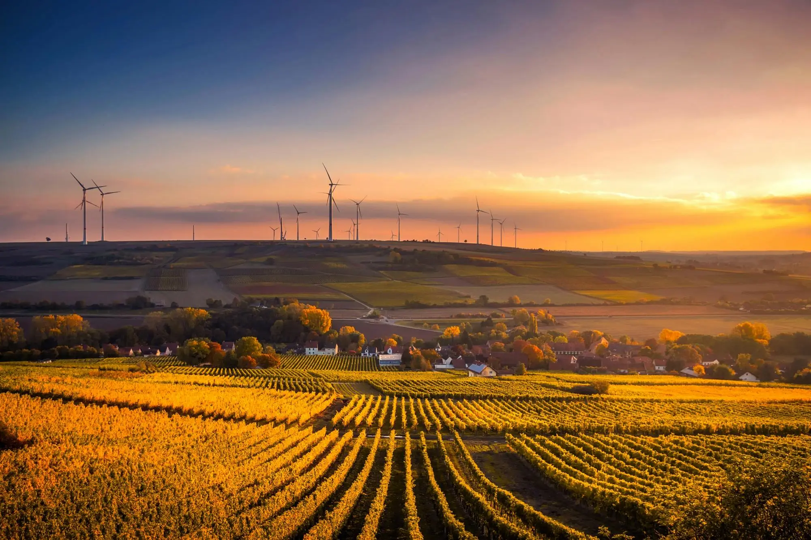
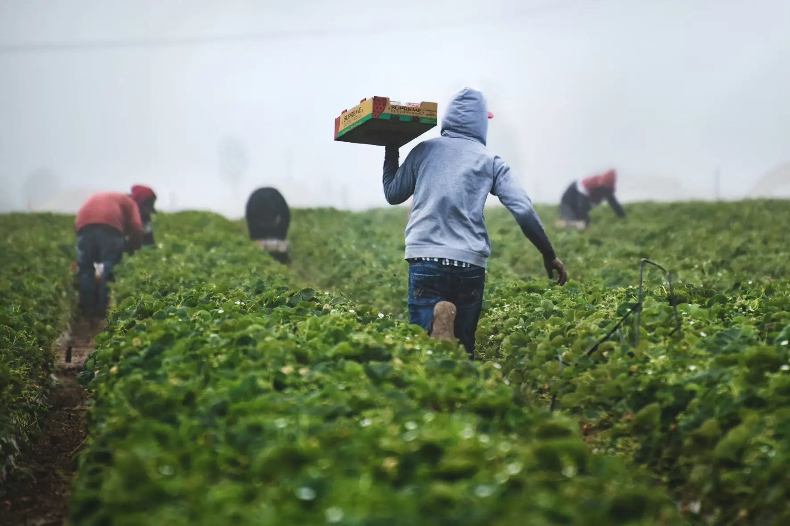
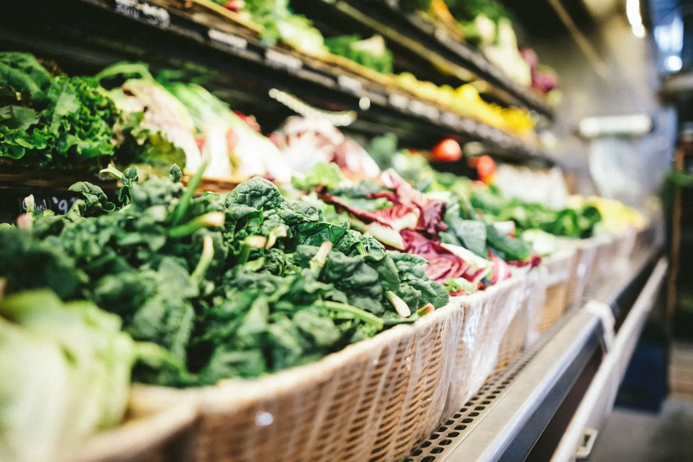
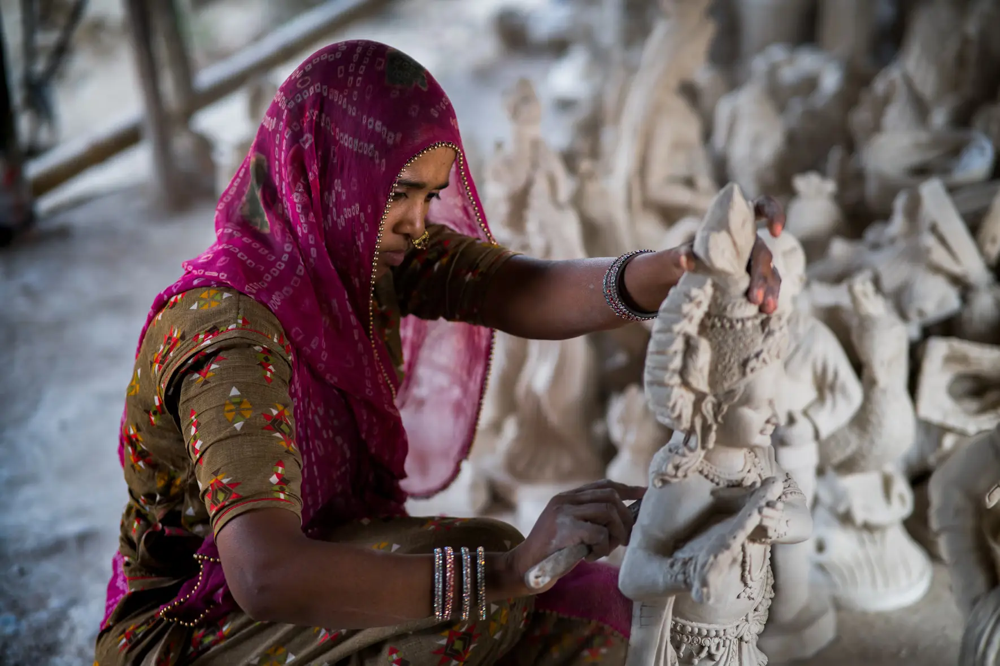
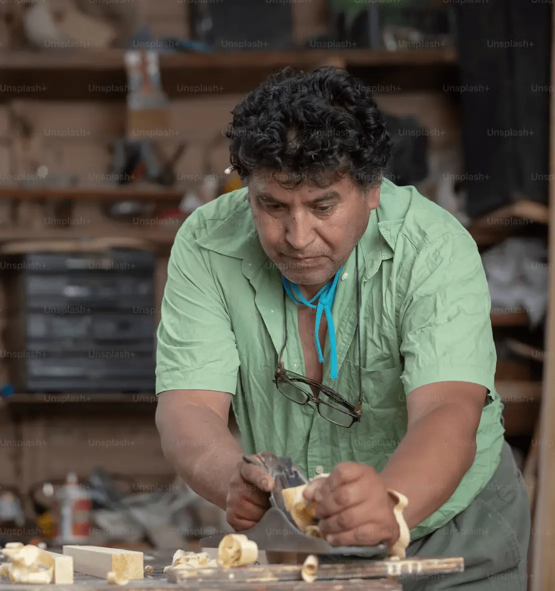
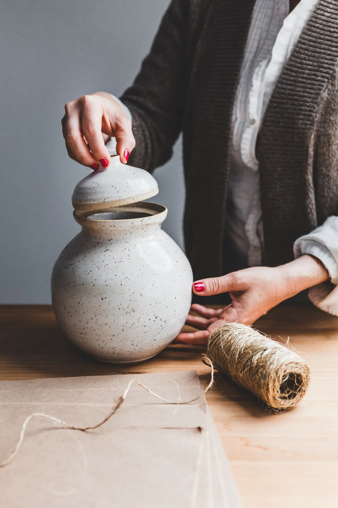
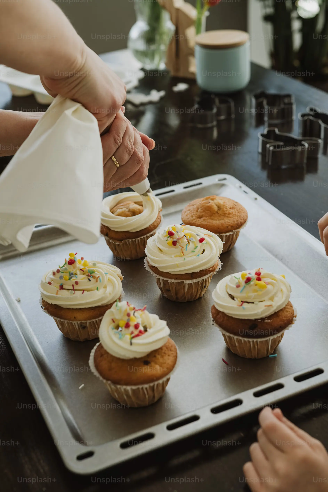
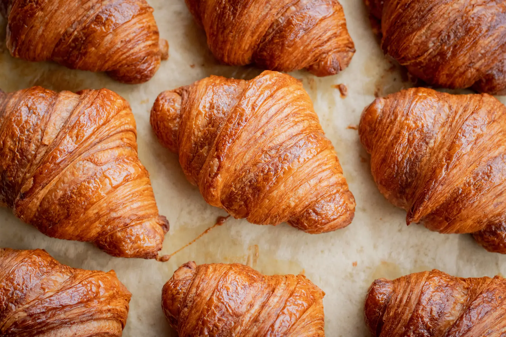

HOME
ABOUT
GALLERY
CALENDAR

From the earth's embrace to your plate's delight
at Rustic Roots Market, our vegetables journey straight from
farmer to market, preserving the essence of freshness
and the spirit of community with each harvest.
Take a look at
what our market provides
      